01⌖Полевая практика
Тактическая подготовка
Командные задачи, безопасное движение на местности и работа в группе.
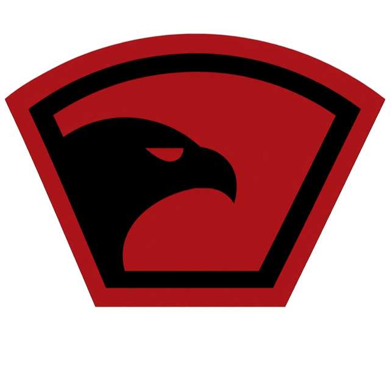
НВП01 Практика. Дисциплина. Команда.
Проводим образовательные военно-прикладные смены в детских лагерях — безопасно, содержательно и с настоящим командным духом.
Выездная программа для лагерей
Опытный педагогический состав
Собственное оснащение
02 / Опыт, которому доверяют
Встраиваем программу в жизнь лагеря: учитываем возраст участников, расписание, инфраструктуру площадки и задачи конкретной смены.
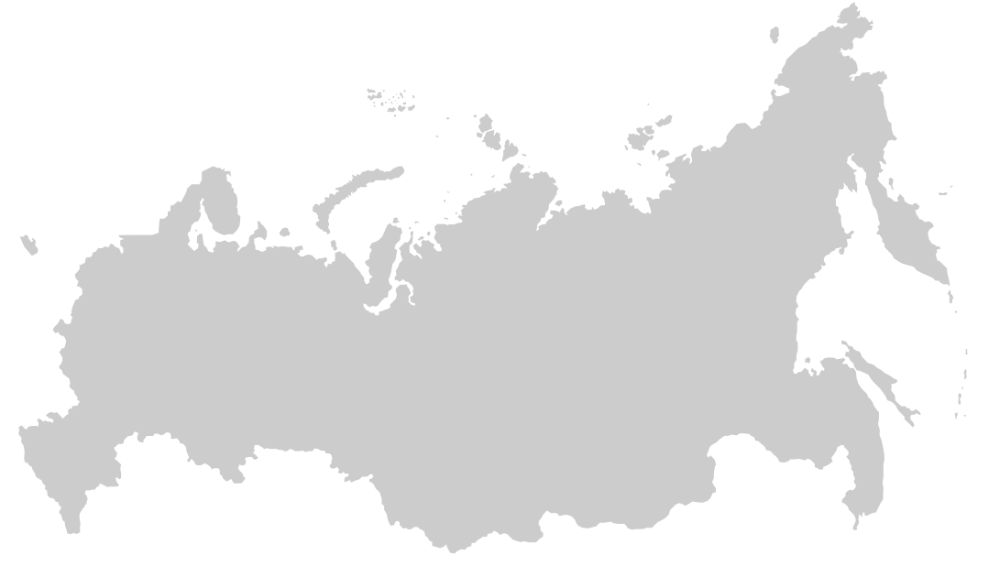
Каждая точка — новый лагерь, новая команда и программа, настроенная под площадку.
03 / Направления подготовки
Содержание строится вокруг практики, командного взаимодействия и понятных сценариев. Нагрузка адаптируется под возраст участников.
Командные задачи, безопасное движение на местности и работа в группе.
Правила безопасности, устройство учебных макетов и основы меткости.
Алгоритмы первой помощи, эвакуация и практика на учебных сценариях.
Дисциплина радиообмена, передача координат и постановка задач.
Карта, компас, построение маршрута и ориентирование на местности.
Основы полевого быта, маскировка и решение прикладных задач.
Устройство, безопасное пилотирование и работа экипажа.
Дисциплина, ответственность, взаимовыручка и слаженность.
Развитие выносливости, координации и привычки работать на общий результат.
Безопасное поведение на воде, взаимопомощь и практические навыки.
Лидерство, распределение ролей и решение задач вместе с отрядом.
Практика на современных симуляторах и разбор учебных ситуаций.
04 / Инструкторский состав
Инструктор — не просто специалист по своему направлению. Это педагог, который умеет объяснить сложное, вовлечь группу и удерживать высокий стандарт безопасности.
Прикладная подготовка и безопасность занятий.
Алгоритмы помощи и учебные сценарии.
Работа с группой и поддержка участников.
Радиообмен и координация команды.
Техника и безопасное пилотирование.
Навигация, карты и ориентирование.
Полевые задачи и оборудование.
Дисциплина и командная слаженность.
Выносливость и координация.
Практические занятия у воды.
Лидерство и распределение ролей.
Сценарий смены и контроль качества.
«Строго к задаче. Бережно к ребёнку. Ответственно к результату.»
05 / Материально-техническое обеспечение
Большой комплект оборудования позволяет развернуть насыщенную программу на площадке лагеря и проводить занятия параллельно для нескольких групп.
06 / Атмосфера смены
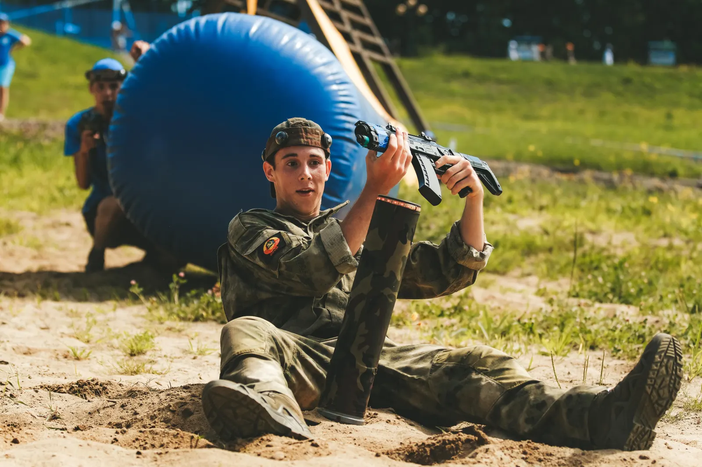
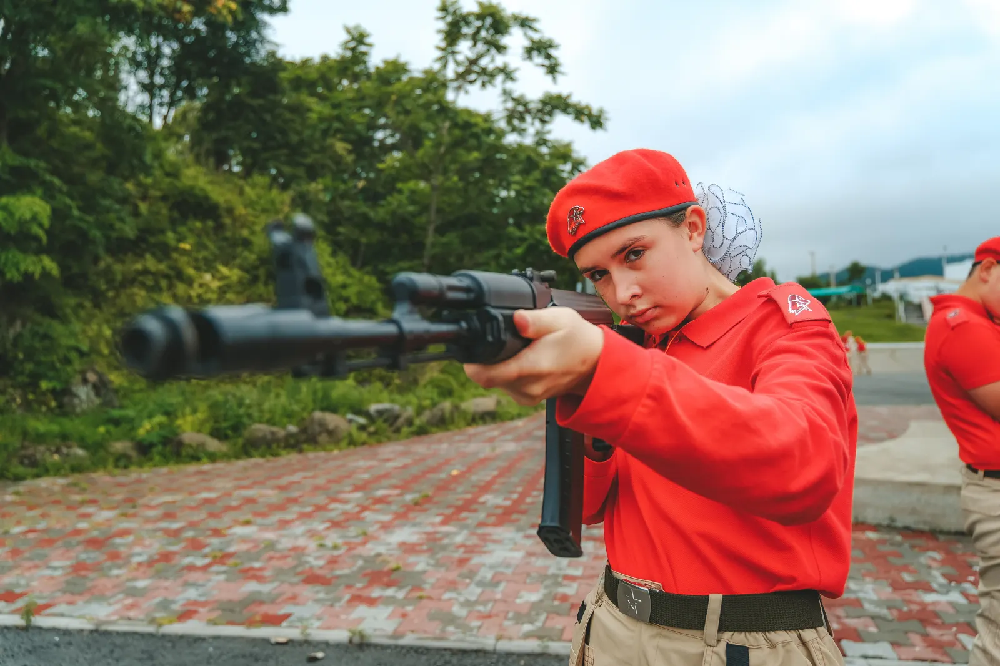
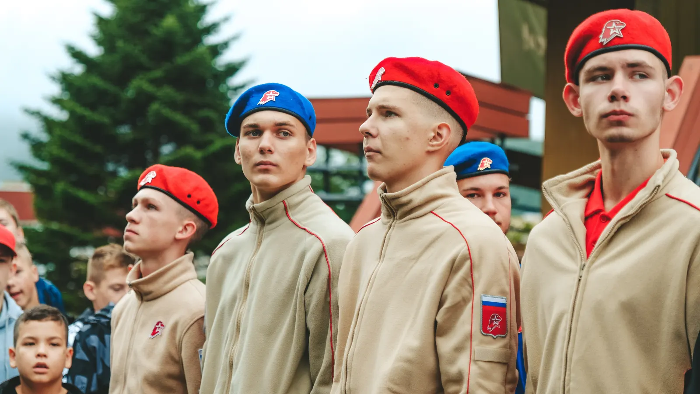
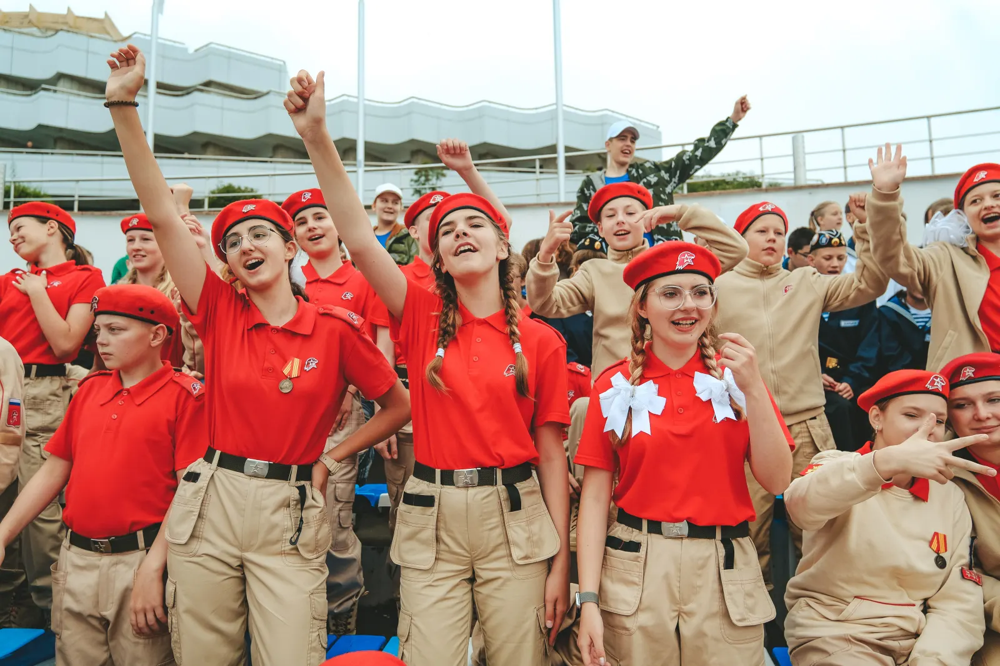
В галерее — реальные фотографии из архива программы, смена во ВДЦ «Океан».
Галерея / Жизнь лагеря
Спорт, новые технологии, отдых, общение и моменты, из которых складывается настоящая смена.
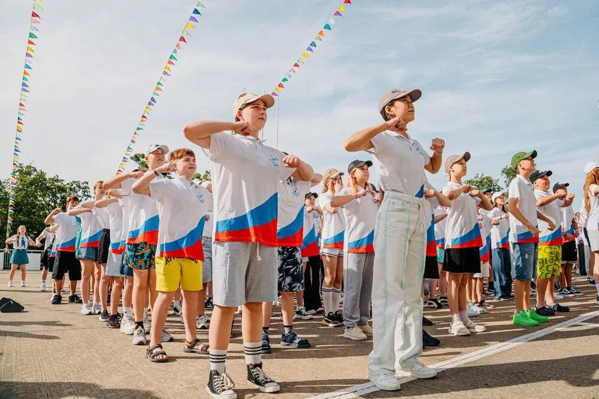
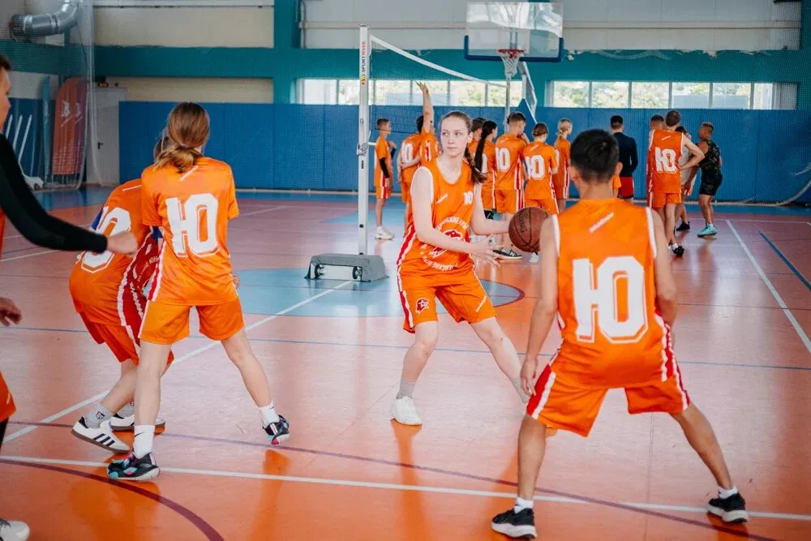
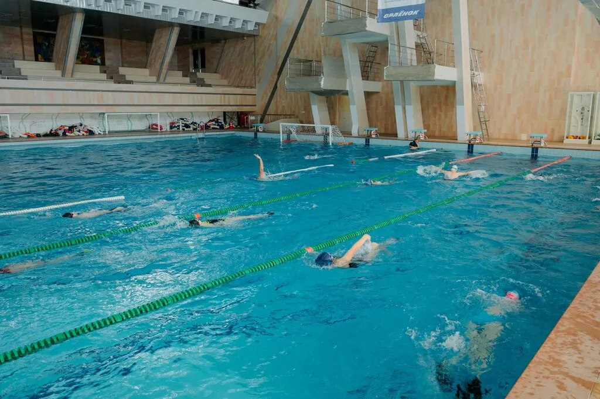
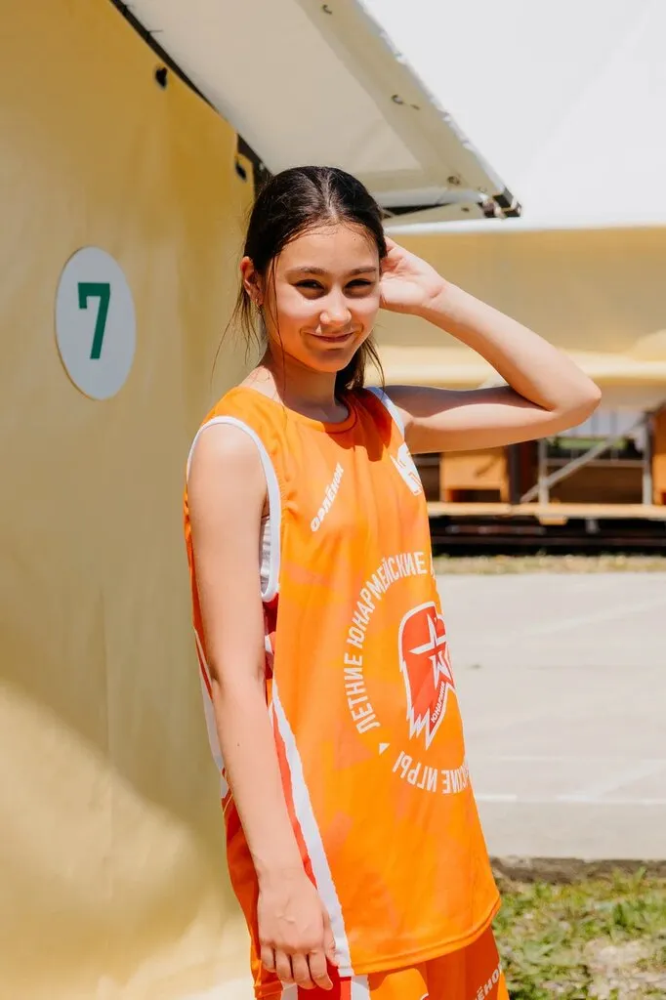
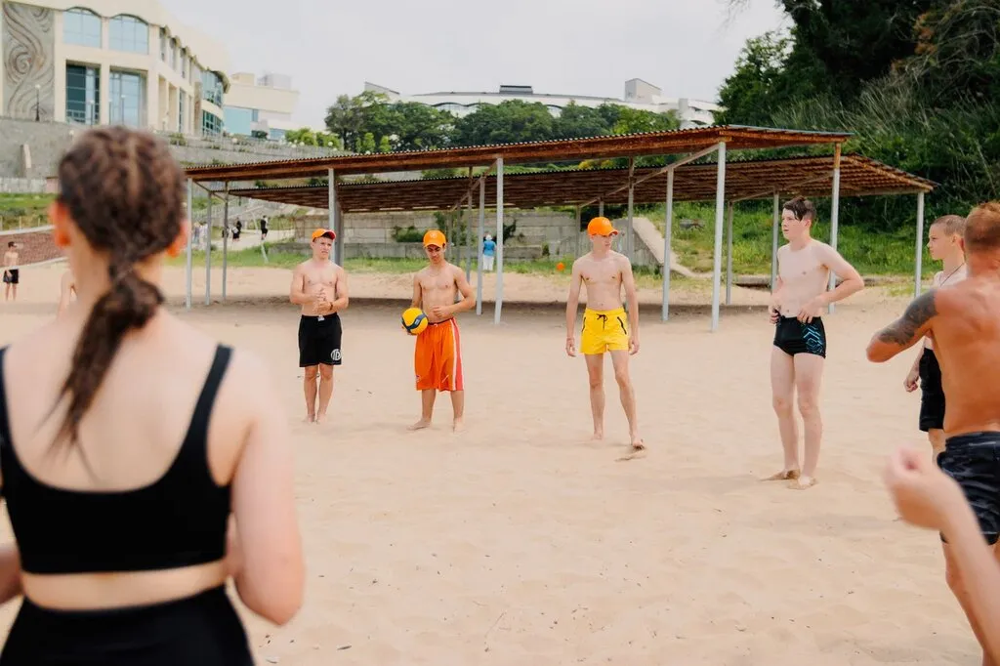
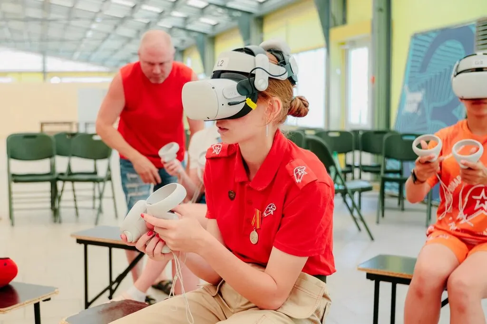
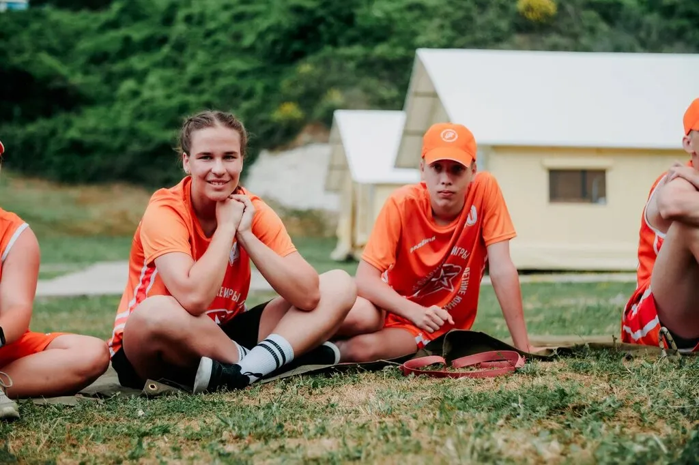
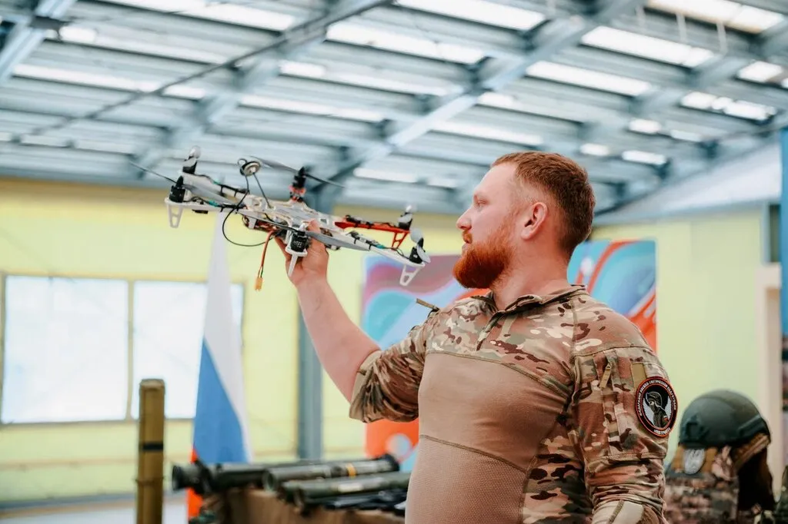
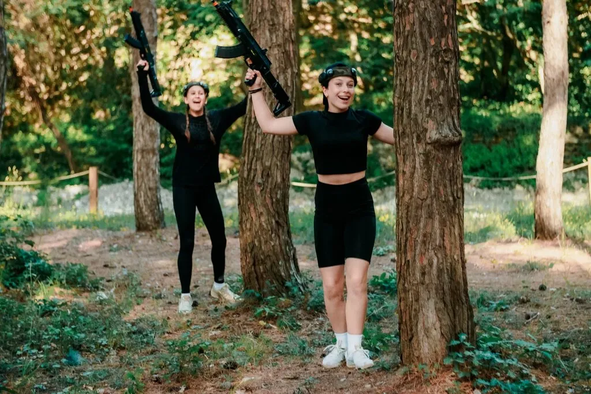
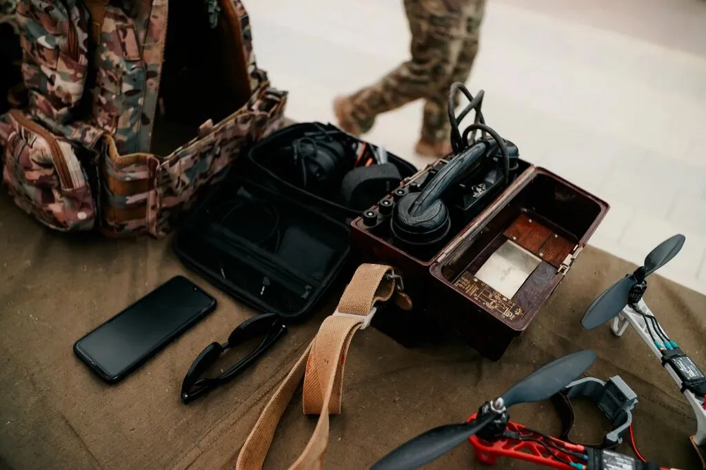
Выездная программа для лагерей
Подготовим содержание под возраст, длительность смены и возможности площадки.